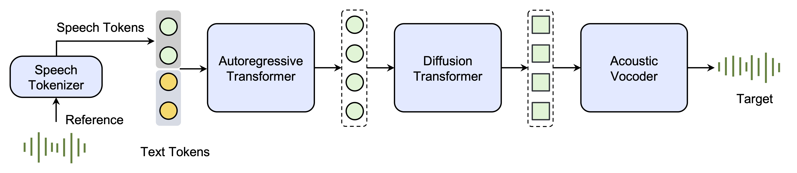

Seed-TTS:
A Family of High-Quality Versatile Speech Generation Models
Seed Team
ByteDance
Abstract. We introduce Seed-TTS, a family of large-scale autoregressive text-to-speech (TTS) models capable of generating speech that is virtually indistinguishable from human speech. Seed-TTS serves as a foundation model for speech generation and excels in speech in-context learning, achieving performance in speaker similarity and naturalness that matches ground truth human speech in both objective and subjective evaluations. With fine-tuning, we achieve even higher subjective scores across these metrics. Seed-TTS offers superior controllability over various speech attributes such as emotion and is capable of generating highly expressive and diverse speech for speakers in the wild. Furthermore, we propose a self-distillation method for speech factorization, as well as a reinforcement learning approach to enhance model robustness, speaker similarity and controllability. We additionally present a non-autoregressive (NAR) variant of the Seed-TTS model, named Seed-TTSDiT, which utilizes a fully diffusion-based architecture. Unlike previous NAR-based TTS systems, Seed-TTSDiT does not depend on pre-estimated phoneme durations and performs speech generation through end-to-end processing. We demonstrate that this variant achieves comparable performance to the language model-based variant in both objective and subjective evaluations and showcase its effectiveness in speech editing.
Contents
System Overview

Figure 1. An overview of the Seed-TTS inference pipeline. (1) The speech tokenizer learns tokens from reference speech. (2) The autoregressive language model generates the speech tokens based on the condition text and speech. (3) The diffusion transformer model generates continuous speech representations given generated speech tokens in a coarse-to-fine manner. (4) The acoustic vocoder yields higher-quality speech from the diffusion output.
Zero-shot In-context Learning
| Language | Prompt | Same Language Generation | Corss-linugal Generation |
|---|---|---|---|
| EN | I don't really care what you call me. I've been a silent spectator, watching species evolve, empires rise and fall. But always remember, I am mighty and enduring. Respect me and I'll nurture you; ignore me and you shall face the consequences. |
顿时，气氛变得沉郁起来。乍看之下，一切的困扰仿佛都围绕在我身边。我皱着眉头，感受着那份压力，但我知道我不能放弃，不能认输。于是，我深吸一口气，心底的声音告诉我：“无论如何，都要冷静下来，重新开始。” |
|
Dealing with family secrets is never easy. Yet, sometimes, omission is a form of protection, intending to safeguard some from the harsh truths. One day, I hope you understand the reasons behind my actions. Until then, Anna, please, bear with me. |
处理家庭秘密从来都不是一件容易的事。然而，有时候，隐瞒是一种保护形式，旨在保护一些人免受残酷的真相伤害。有一天，我希望你能理解我行为背后的原因。在那之前，安娜，请容忍我。 |
||
The combinations of different textures and flavors create a perfect harmony. The succulence of the steak, the tartness of the cranberries, the crunch of pine nuts, and creaminess of blue cheese make it a truly delectable delight. Enjoy your culinary adventure! |
听着你的话，我心里五味杂陈。虽然我愿意一直在你身边，承担一切不幸，但我知道只有让你自己面对，才能真正让你变得更强大。所以，你要记得，无论面对何种困难，都请你坚强，我会在心里一直支持你的。 |
||
| ZH | 突然，身边一阵笑声。我看着他们，意气风发地挺直了胸膛，甩了甩那稍显肉感的双臂，轻笑道："我身上的肉，是为了掩饰我爆棚的魅力，否则，岂不吓坏了你们呢？" |
Suddenly, there was a burst of laughter beside me. I looked at them, stood up straight with high spirit, shook the slightly fleshy arms, and smiled lightly, saying, "The flesh on my body is to hide my bursting charm. Otherwise, wouldn't it scare you?" |
|
他闭上眼睛，期望这一切都能过去。然而，当他再次睁开眼睛，眼前的景象让他不禁倒吸一口气。雾气中出现的禁闭岛，陌生又熟悉，充满未知的危险。他握紧拳头，心知他的生活即将发生翻天覆地的改变。 |
He closed his eyes, expecting that all of this could pass. However, when he opened his eyes again, the sight in front of him made him couldn't help but take a deep breath. The closed island that appeared in the fog, strange and familiar, was full of unknown dangers. He tightened his fist, knowing that his life was about to undergo earth-shaking changes. |
||
顿时，气氛变得沉郁起来。乍看之下，一切的困扰仿佛都围绕在我身边。我皱着眉头，感受着那份压力，但我知道我不能放弃，不能认输。于是，我深吸一口气，心底的声音告诉我：“无论如何，都要冷静下来，重新开始。” |
Suddenly, the atmosphere became gloomy. At first glance, all the troubles seemed to surround me. I frowned, feeling that pressure, but I know I can't give up, can't admit defeat. So, I took a deep breath, and the voice in my heart told me, "Anyway, must calm down and start again." |
Speaker Fine-tune
| Text | Generated | |
|---|---|---|
| Speaker1 | 好呀，哈哈哈哈哈，喜欢笑的人运气都不会差哦，希望你每天笑口常开~ | |
| 哇！恭喜你中了大乐透，八百万可真不少呢！有什么特别的计划或想法吗？ | ||
| 哼，你这么问是想请本小姐吃饭吗？如果对象是你的话，那也不是不可以。 | ||
| Speaker2 | 是呀，他还想换个地球仪哈哈哈，看来给你积累了一些快乐值了，你还想不想再听一个其他的笑话呀？ | |
| 嘿嘿，你是不是也想拥有甜甜的恋爱呢？《微微一笑很倾城》是你的不二选择，男女主是校花校草类型，他们通过游戏结识，再到两人见面，全程没有一点误会，真的齁甜，想想都忍不住“姨妈笑”~ | ||
| 小傻瓜，嗯……算是个很可爱很亲切的名字，有点“独特”哦，不过我有些好奇，你为什么会给我选这个昵称呢？ |
Emotion Control
| Emotion | Text | Generated |
|---|---|---|
| Angry | 你为什么总是重复犯同样的错误？难道你就不能学习一下吗？ | |
| Happy | 昨晚的电影真是太精彩了，我笑到肚子疼，还想再看一遍。 | |
| Sad | 在这个熟悉的城市里，每个角落都充满了她的影子，让我无处遁形。 | |
| Tender | 每一次想到你，我的心就充满了柔软的光芒，愿这份情感能够穿越时空，让你感受到我的爱和思念。 | |
| Confused | 这幅画是否真的完成了？还是我应该再添加一些细节来完善它？ | |
| Fear | 他对黑暗的恐惧从小就存在，即使是成年后的某些夜晚，也会感到不自在。 |
Speech Factorization
Zero-shot Voice Conversion
| Language | Source Audio | Timbre Prompt | Converted Audio |
|---|---|---|---|
| EN | |||
| ZH | |||
Preference Biasing Through Reinforcement Learning
Emotion Control in Zero-shot In-context Learning
| Prompt | Angry | Happy | Sad | Surprise | w/o Control |
|---|---|---|---|---|---|
Fully Diffusion-based Speech Generation
Zero-shot TTS
| Language | Prompt | Same Language Generation | Corss-linugal Generation |
|---|---|---|---|
| EN | I don't really care what you call me. I've been a silent spectator, watching species evolve, empires rise and fall. But always remember, I am mighty and enduring. Respect me and I'll nurture you; ignore me and you shall face the consequences. |
顿时，气氛变得沉郁起来。乍看之下，一切的困扰仿佛都围绕在我身边。我皱着眉头，感受着那份压力，但我知道我不能放弃，不能认输。于是，我深吸一口气，心底的声音告诉我：“无论如何，都要冷静下来，重新开始。” |
|
Perhaps they are driven by the delicious blend of flavors, or it could be the appealing visual presentation. At the end of the day, our choices in food reflect our personal preferences and sometimes, even our lifestyle or belief system. |
我抬起头，坚定地说：“身高不能决定一切，这世界在看我，我更看得到世界。无论是北上广，或是别的什么，我都将以我自己的方式去攀爬，去追逐。我可能小，但我绝不会被忽视。” |
||
Your safety and the pack's reputation are at stake. Your bravery is admirable, but sometimes bravery is knowing when to retreat. Please, consider returning with me. We can work out a plan, but only if you're willing to listen. |
你的安全以及族群的声誉都危在旦夕。你的勇敢令人钦佩，但有时候勇敢在于懂得何时撤退。拜托，考虑一下和我一起回去吧。我们可以制定一个计划，但前提是你愿意倾听。 |
||
| ZH | 突然，身边一阵笑声。我看着他们，意气风发地挺直了胸膛，甩了甩那稍显肉感的双臂，轻笑道："我身上的肉，是为了掩饰我爆棚的魅力，否则，岂不吓坏了你们呢？" |
Suddenly, there was a burst of laughter beside me. I looked at them, stood up straight with high spirit, shook the slightly fleshy arms, and smiled lightly, saying, "The flesh on my body is to hide my bursting charm. Otherwise, wouldn't it scare you?" |
|
这是一种策略，也是一种智慧。万变不离其宗，只要你把握住当前的游戏规则，就能玩转整个局势。“记住，预知敌情，了解自己，方能成就一番伟业。”我认真地对你说，希望你能明白这个道理。 |
This is a strategy, and also a kind of wisdom. All changes come from the same source, as long as you grasp the current rules of the game, you can handle the whole situation. "Remember, to know the enemy's situation in advance and to understand yourself, can you achieve great achievements." I said to you seriously, hoping that you can understand this truth. |
||
皇上的面色未变，宛如雕塑般静止，他的眼中闪过一丝动人的温度。他深深地看了那位忠心耿耿的臣子一眼，终于开口：“诺，我会再考虑考虑的。”他的声音低沉且坚定，留下空气中隐隐的无奈与柔情。 |
The emperor's complexion did not change, remaining as still as a sculpture, and a touch of touching warmth flashed in his eyes. He deeply glanced at the loyal minister, and finally spoke: "Well, I will consider it again." His voice was low and firm, leaving a faint hint of helplessness and tenderness in the air. |
Content Editing
| Language | Original Text | Original Audio | Target Text | Edited Audio |
|---|---|---|---|---|
| EN | They can't order me to stop dreaming. If you dream a thing more than once, it's sure to come true. Have faith in your dreams, and someday your rainbow will come shining through. | They can't require me to stop imagining. If you envision a thing more than once, it's bound to come about. Have trust in your visions, and someday your radiance will come beaming through. | ||
| Are you familiar with it? Slice the steak and place the strips on top, then garnish with the dried cranberries, pine nuts, and blue cheese. I wonder how people rationalise the decision? | Are you acquainted with it? Cut the pork and place the strips on top, then garnish with the dried cherries, almonds, and feta cheese. I query how people justify the choice? | |||
| ZH | 自古以来，庸君最怕党政了，可圣君他就不怕，不但不怕，反能利用。要我说，你就让明珠索额图互相争宠，只要你心里明白，左右逢源，你就能立于不败之地。 | 从古至今，庸君最怕朝纲了，可明君他就不怕，不但不怕，反能借助。要我说，你就让李四张三互相争宠，只要你心里清楚，左右周旋，你就能处于不败之境。 | ||
| 对，这就是我，万人敬仰的太乙真人，虽然有点婴儿肥，但也掩不住我逼人的帅气。 | 对，这就是我，众人尊崇的太白金星，虽然有点娃娃脸，但也遮不住我迷人的魅力。 |
Speed Editing
| Language | Original Audio | Speed=0.8 | Speed=1.2 |
|---|---|---|---|
| EN | |||
| ZH | |||
Model Applications
Audio Book
| Text | Generated | |
|---|---|---|
| Multi-speaker | “这个药丸……不会是迷药或者春药之类的东西吧？我怎么闻着香味儿和两位姐姐说的那么相似？嗯，你该不会……想对我图谋不轨吧？”韩立闻言是愣了半天呐，他现在突然有种吐血三碗的感觉，这女孩儿的心思也太难以捉摸了吧，竟然能把迎香丸，联想到春药上。哎呀韩立现在也不知是该佩服对方的谨慎小心，还是应该为自己的无故蒙冤，而大呼三声了。“看样子，你好像说的是真的。不过，我还是要把它拿去给二姐检验下才能用，毕竟我们女儿家，要小心为上。”“咳，咳，呃随便你了。”韩立无言，只能干咳几声，掩饰一下自己脸上的窘迫，他现在觉得呀，自己还是离这个小妖精远点的好，否则，不知什么时候就要被她给郁闷死了。“哼哼，不过，如果这药真像你所说的那么好用，那就算你过关啦！今后师兄在莫府有什么为难的事，尽管可以来找彩环帮忙。我只要收些小小的报酬，就肯定能帮你完全解决。”“行啊，师妹，师兄有事，一定找你帮忙。”韩立这时也恢复了常态，皮笑肉不笑地回应着此话，心里呀，却在恶狠狠地想到：“找你这个小财迷才怪了。” | |
| Speaker1 | 老夫人疑惑，“娇娇，你今儿是怎么了？”平日里，她的娇娇儿和萧弈的关系也没这么好。“我……”南宝衣生怕被发现端倪，又有心提醒老夫人萧弈将来前程不可限量，于是哽咽着扑进老人怀里，“我没有爹娘疼，二哥哥也没有爹娘疼，府里的人都不搭理他，就算他在书院考了一甲也没人在意，二哥哥好可怜呜呜呜……”季嬷嬷笑道：“老奴瞧着，五小姐怕是和二公子有缘呢。” | |
| Speaker2 | 我也不知是哪里来的勇气，一把抓住那放肆的手，可就在我抓住那手的瞬间，他将脸埋在我的耳边深吸一口，“别动。”“你……你到底要干什么呀？你饶了我吧，我真的错了，只要你放了我，你要我烧什么给你都行！”“你是我的女人，我只要你。”“欸哟，我给你烧蚕丝被，烧电热毯，再给你烧十个仿真娃娃，要啥明星款式都有。欸呀求求你放了我吧。”我说着都快哭了，抓着他的手也抖的厉害。哪知他听了噗嗤一笑，一口咬住我的耳珠狠狠的吮吸着，“不要再挣扎了，你生是我的妻，死是我的鬼！” |
Cross-lingual Content Creation
| Source Video | Generated Video | |
|---|---|---|
| ZH2EN | ||
| PT2EN | ||
| ZH2EN (With Mouth Editing) |
||
| EN2ES (With Mouth Editing) |